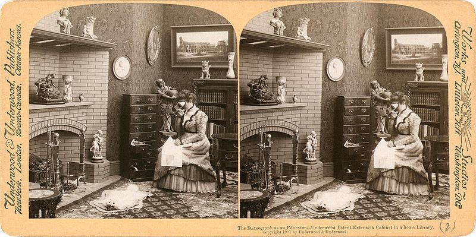
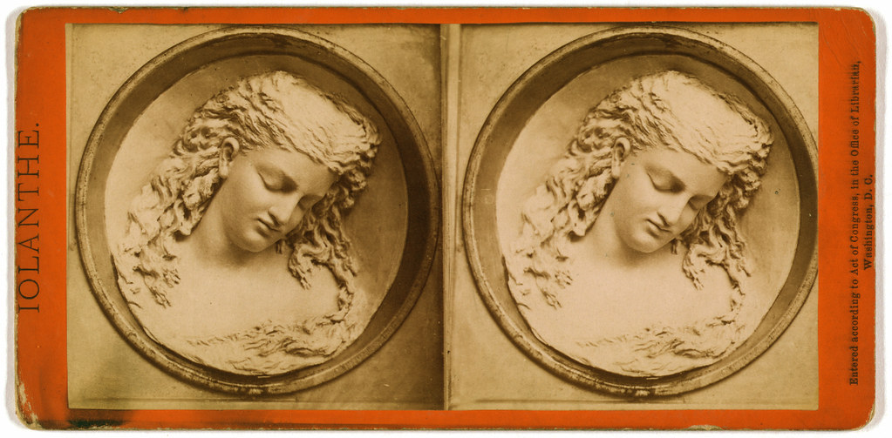
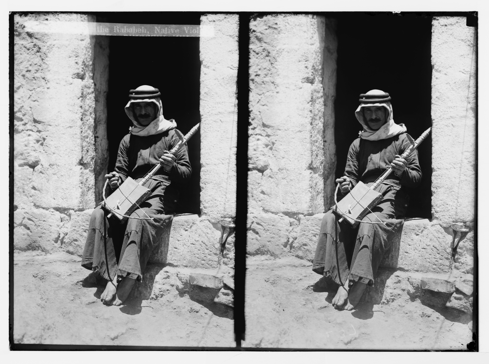
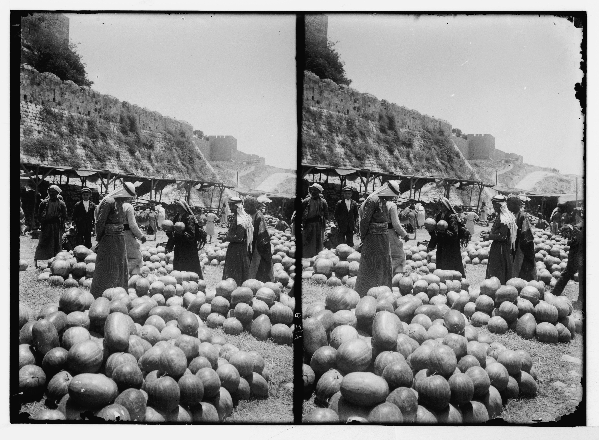

There’s something magical about being able to take a two dimensional image and make our brains see depth in it. What even. I can’t claim to understand the optics in any ways I could explain except that we see depth in our daily lives because we have two eyes, just so far apart. Therefore to mimic a 3D effect for our brains, we need two images, or two images cleverly overlaid.
The former is called stereoscopy, and dates back to the early days of photography. You can often find boxes of old stereoscopes/stereograms in antique stores. Common themes are landscapes and monuments, foreign lands, but also staged domestic scenes, and eventually family photos. Such are those you see below. These first three are the classic ones made for viewing through a stereoscope.
The Stereograph as an Educator, 1901. Underwood & Underwood. Source

Married and Settled, 1900. Source
A Study in Butter — The Dreaming Iolanthe, by Caroline S. Brooks. 1876. Source
The following can be viewed by crossing your eyes:
Playing a rababeh, c. 1910. Source
Watermelon Market, c. 1910. Source
Below are some that I’ve taken, amateur though they are. The common way to look at these images is to relax your eyes so they move farther apart until the images come together. This can be achieved using the stereoscope, or by doing the “magic eye” thing and holding the image to your nose and slowly move it farther away without changing the focus of your eyes. This is called parallel, as opposed to the cross-eyed setup.
If you flip the images, you can cross your eyes to get the 3D effect. Personally, this is what I like because I can cross my eyes on command, and to the amount I choose. No special technique or equipment needed. If I cross my eyes on a parallel stereogram, the depth is reversed, which makes for a headache-inducing experience. You can also take the two images from a stereogram, scan them into your computer, and create a super simple two-frame animation, thus also simulating a 3D effect, although it isn't quite the same experience.
The other popular method of 3D—overlaying two images—is an anaglyph, your classic red/cyan image with the super cool paper glasses with the red and cyan lenses. This is how B-movies in the 1950s achieved their 3D effect. I love this aesthetic even without using the glasses. Interestingly, the images can be full color, although I think I prefer the classic aesthetic of the grayscale + red/cyan. Similar to stereoscopy, one color represents what you see from one eye, the other color, the other eye. You can overlay any stereograms and make them into anaglyphs.
Looking at them without glasses, you can tell the depth from the distance between the red and cyan: the farther apart the colors are, the deeper the perceived depth.
[ CLASSIC ANAGLYPH IMAGES, STILL FROM 1950s B MOVIES ]
Here are some of my anaglyphs:
[ MY ANAGLYPHS ]
And that, my friends, ...